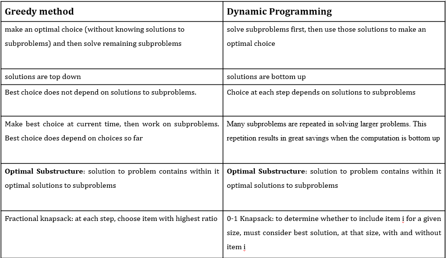
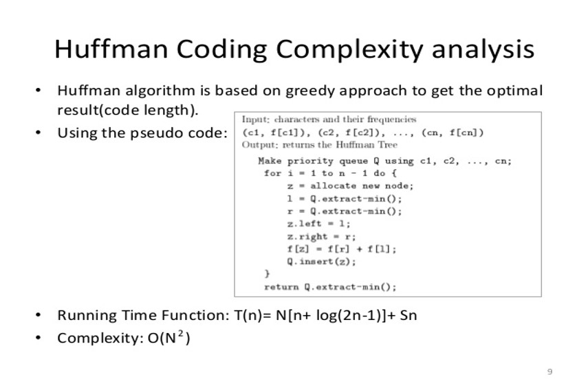
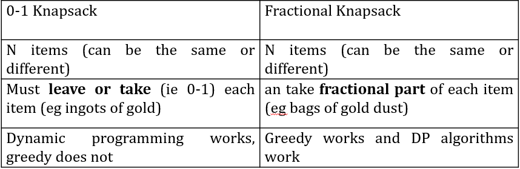
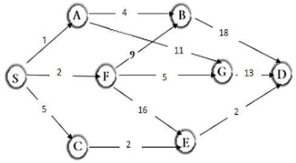
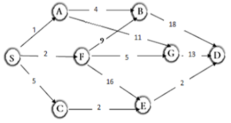

<HTML>
	<HEAD>
		<TITLE>Design And Analysis Of Algorithms</TITLE>
	</HEAD>
		<meta charset="utf-8">
<meta name="viewport" content="width=device-width, height=device-height, initial-scale=1">
<style>
* {
  box-sizing: border-box;
}

body {
  font-family: Arial, Helvetica, sans-serif;
}

header {
  background-color: #666;
  padding: 20px;
  text-align: center;
  font-size: 35px;
  color: white;
  height: 250px;
}

nav {
  float: left;
  width: 35%;
  height: 5100px; 
  background: #ccc;
  font-size: 40px;
  padding: 20px;
}

nav ul {
  list-style-type: none;
  padding: 0;
}

article {
  float: left;
  padding: 20px;
  width: 65%;
  background-color: #f1f1f1;
  height: 5100px; 
}

section:after {
  content: "";
  display: table;
  clear: both;
}

footer {
  background-color: black;
  padding: 30px;
  text-align: center;
  color: white;
}

@media (max-width: 600px) {
  nav, article {
    width: 100%;
    height: auto;
  }
}
#myBtn {
  display: none;
  position: fixed;
  bottom: 20px;
  right: 30px;
  z-index: 99;
  font-size: 18px;
  border: none;
  outline: none;
  background-color: red;
  color: white;
  cursor: pointer;
  padding: 15px;
  border-radius: 4px;
}

#myBtn:hover {
  background-color: #555;
}
a {
  text-decoration: none;
  display: inline-block;
  padding: 8px 16px;
}

.previous {
  background-color: white;
  color: black;
}

.next {
  background-color: white;
  color: black;
}

.round {
  border-radius: 50%;
}
a:link {
  color: red;
}

/* visited link */
a:visited {
  color: #604fbf;
}

/* mouse over link */
a:hover {
  color: #66cc00;
}

/* selected link */
a:active {
  color: blue;
}
.pagination {
  display: inline-block;
}

.pagination a {
  color: white;
  float: left;
  padding: 8px 16px;
  text-decoration: none;
  background-color: #0047b3;
}
.pagination a {
  border: 1px solid #80aaff; 
}
.pagination a {
  margin: 0 4px; /* 0 is for top and bottom. Feel free to change it */
}
.pagination a.active {
  background-color: #4CAF50;
  color: white;
}

.pagination a:hover:not(.active) {background-color: #ddd;}
</style>
</head>
<body bgcolor="#e6f0ff">

<header>			<br>
			<CENTER>	<u><h1>UNIT-3 -- GREEDY AND DYNAMIC PROGRAMMING</h1></u></CENTER>
</header>

<section>
  <nav>
    <ul">List of topics in U3-
      <li><a href="#s1">Huffman Coding</a>
      <li><a href="#s2">Knapsack Problem</a>
      <li><a href="#s3">Minimum Spanning Tree</a>
	  <li><a href="#s4">Dynamic Programming</a>
	  <li><a href="#s5">Travelling Salesman Problem</a>
	  <li><a href="#s6">Multistage Graph</a>
    </ul>
  </nav>
  
  <article>
  <center>
	 <div class="pagination">
  <a href="F2.html">&laquo;</a>
  <a href="index.html">Home</a>
  <a href="F1.html">U1</a>
  <a href="F2.html">U2</a>
  <a href="F3.html" class="active">U3</a>
  <a href="F4.html">U4</a>
  <a href="F5.html">U5</a>
  <a href="F4.html">&raquo;</a>
</div></center>
			<p id="s4"><h2>GREEDY VS DYNAMIC APPROACH</h2></p>
			<center></center>
    <p id="s1"><h3>Huffman Coding</h3></p>
	<p><u>Problem:</u> Finding the minimum length bit string which can be used to encode a string of symbols. <br>
		Used for compressing data.<br>
		Uses a simple heap based priority queue. <br>
		Each leaf is labeled with a character and its frequency of occurrence. <br>
		Each internal node is labeled with the sum of the weights of the leaves in its subtree.<br>
		Huffman coding is a lossless data compression algorithm.<br>
		Steps to build huffman code:<br>
1. Create a leaf node for each unique character and build a min heap of all leaf nodes (Min Heap is used as a priority queue)<br>
2. Extract two nodes with the minimum frequency from the min heap.<br>
3. Create a new internal node with frequency equal to the sum of the two nodes frequencies. 
Make the first extracted node as its left child and the other extracted node as its right child. Add this node to the min heap.<br>
4. Repeat steps#2 and #3 until the heap contains only one node. The remaining node is the root node and the tree is complete.<br>
		Algorithm:<br>
			Huffman (c)<br>
			n = |c|<br>
			Q = c<br>
			for i =1 to n-1<br>
			do z = Allocate-Node ()<br>
			x = left[z] = EXTRACT_MIN(Q)<br>
			y = right[z] = EXTRACT_MIN(Q)<br>
			f[z] = f[x] + f[y]<br>
			INSERT (Q, z)<br>
			return EXTRACT_MIN(Q)<br>
	<ul>Methods to solve huffman coding:
	<li>Fixed length coding
	<li>Variable length coding</ul>
	<center></center></p>
	<p id="s2"><h3>Knapsack Problem</h3></p>
	<p><b>Greedy-fractional-knapsack (w, v, W)</b><br>
For i =1 to n<br>   	 do x[i] =0<br>
weight = 0<br>
while weight &lt W<br>	do i = best remaining item<br>   		 If weight + w[i] ≤ W  then<br>  		    	x[i] = 1<br>    			weight = weight + w[i]<br>
			else<br>            		x[i] = (w - weight) / w[i]<br>        		       	weight = W<br>
return x<br>
<b>0/1 Knapsack Problem</b><br>
The 0/1 Knapsack Problem is to maximize the sum of the values of the items in the knapsack so that the sum of the weights is less than or equal to the knapsack's capacity.
<br>
Optimal substructure:<br>
	To consider all subsets of items, there can be two cases for every item: <br>
1. The item is included in the optimal subset<br> 
2. Not included in the optimal set.<br>
	Therefore, the maximum value that can be obtained from n items is max of following two values.<br>
1. Maximum value obtained by n-1 items and W weight (excluding nth item).<br>
2. Value of nth item plus maximum value obtained by n-1 items and W minus weight of the nth item (including nth item).<br>
	If weight of nth item is greater than W, then the nth item cannot be included and case 1 is the only possibility.<br>
		<center></center>
</p>
<p id="s3"><h3>Minimum Spanning Tree</h3></p>
<p>There are two methods to form MST:
<li>Prim's Algorithm
<li>Kruskal's Algorithm<br><br>
<b>Prim's Algorithm-</b><br><br>
1) Create a set mstSet that keeps track of vertices already included in MST.<br>
2) Assign a key value to all vertices in the input graph. Initialize all key values as INFINITE. 
Assign key value as 0 for the first vertex so that it is picked first.<br>
3) While mstSet doesn’t include all vertices<br>
….a) Pick a vertex u which is not there in mstSet and has minimum key value.<br>
….b) Include u to mstSet.<br>
….c) Update key value of all adjacent vertices of u. To update the key values, iterate through all adjacent vertices. 
For every adjacent vertex v, if weight of edge u-v is less than the previous key value of v, update the key value as weight of u-v<br><br>
<b>Kruskal's Algorithm-</b><br><br>
1. Sort all the edges in non-decreasing order of their weight.<br>
2. Pick the smallest edge. Check if it forms a cycle with the spanning tree formed so far. If cycle is not formed, include this edge. Else, discard it.<br>
3. Repeat step#2 until there are (V-1) edges in the spanning tree.<br>
    </p>
	<p id="s5"><h3>Travelling Salesman Problem</h3></p>
	<p>Given a set of cities and distance between every pair of cities, the problem is to find the shortest possible 
	route that visits every city exactly once and returns to the starting point.<br><br>
	<b>Naive Solution:</b><br><br>
1) Consider city 1 as the starting and ending point.<br>
2) Generate all (n-1)! Permutations of cities.<br>
3) Calculate cost of every permutation and keep track of minimum cost permutation.<br>
4) Return the permutation with minimum cost.<br>
Time Complexity: Θ(n!)<br><br>
<b>Dynamic Programming:</b><br><br>
If size of S is 2, then S must be {1, i},<br>
 C(S, i) = dist(1, i) <br>
Else if size of S is greater than 2.<br>
 C(S, i) = min { C(S-{i}, j) + dis(j, i)} where j belongs to S, j != i and j != 1.<br>
	</p>
	<p id="s6"><h3>Multistage Graph</h3></p>
	<p>Dynamic programming is an algorithm design method that can be used when the solution to a problem may be viewed as the result of a sequence of decisions.<br>
			Minimum spanning of multistage graph using dynamic programming <br>
				<li>Forward Approach
				<li>Backward Approach<br><br>
			<b>Forward Approach:</b><br>
			Identifying source and destination nodes.<br>
    Source node -> S<br>
    Destination node -> D<br>
The possible ways to connect S & D<br>
d(S,D) =  min { 1+d(A,D); 2+d(F,D);5+d(C,D)}	   (1)<br>
d(A,D) = min{4+d(B,D) ;9+d(G,D) }<br>
      = min{ 4 + 18 ; 9 + 13 } <br>
      = min{ 22;22}<br>
d(A,D) = 22  						   (2)<br>
d(F,D) = min{ 9 + d(B,D) ; 5 + d(G,D) ; 16 + d(E,D) }<br>
            = min{ 9 + d(B,D) ; 5 + d(G,D) ; 16 + d(E,D) }<br>
            = min{ 9 + 18 ; 5 + 13 ; 16 + 2}<br>
	            = min{ 27 ; 18 ; 18}<br>
d(F,D) = 18  						(3)<br>
d(C,D) = min{ 2 + d(E,D) }<br>
             = min{ 2 + 2}<br>
               = min{ 4}<br>
d(C,D) = 4  						(4)<br>
substitution of 2,3,4 in 1 gives<br>
d(S,D) =  min { 1 + d(A,D) ; 2 + d(F,D) ; 5 + d(C,D) }<br>
d(S,D) =  min { 1 + 22 ; 2 + 18 ; 5 + 4 }<br>
d(S,D) =  min { 23 ; 20 ; 9 } =  9<br>
Hence according to Forward Approach minimum spanning path from S to D is     S ->C ->E ->D <br><br>
<center></center><br>
<b>Backward Approach:</b><br>
Source node S to next nodes A, F and C <br>
d(S,A) = 1	d(S,F) = 2	d(S,C) = 5<br>
Source node S to next nodes B, G and E<br>
d(S,B) = min{ 1 + d(A,B) ; 2 + d(F,B)}<br>
      = min{ 1 + 4 ; 2 + 9}  = min{ 5 ; 11}<br>  
 d(S,B) = 5<br>
d(S,G) = min{ 1 + d(A,G) ; 2 + d(F,G)}<br>
      = min{ 1 + 11 ; 2 + 5 } = min{ 12 ; 7}  <br>
 d(S,G) = 7<br>
d(S,E) = min{ 2 + d(F,E) ; 5 + d(C,E)}<br>
      = min{ 1 + 16 ; 5 + 2}  = min{ 17 ; 7}  <br>
 d(S,E) = 7<br>
d(S,D) = min{ 5 + d(B,D) ; 7 + d(G,D) ; 7 + d(E,D)}<br>
      = min{ 5 + 18 ; 7 + 13 ; 7 + 2} = min{ 23 ; 20 ; 9}  <br>
 d(S,D) = 9<br>
Hence according to Backward Approach minimum spanning path from S to D is   S -> C -> E -> D <br><br>
<center></center>
</p>
<p><h2>Some important links:</h2>
Greedy vs Dynamic Approach- <a href="https://youtu.be/qyhZDxM7mP4">https://youtu.be/qyhZDxM7mP4</a><br>
Huffman coding- <a href="https://youtu.be/0kNXhFIEd_w">https://youtu.be/0kNXhFIEd_w</a><br>
Knapsack Problem- <a href="https://youtu.be/wFP5VHGHFdk">https://youtu.be/wFP5VHGHFdk</a><br>
MST- <a href="https://youtu.be/5INWifzqStU">https://youtu.be/5INWifzqStU</a><br>
Travelling salesman problem- <a href="https://youtu.be/hvDx7q6vcWM">https://youtu.be/hvDx7q6vcWM</a>
</p>
	<button onclick="topFunction()" id="myBtn" title="Go to top">Top</button>
							<script>
//Get the button
var mybutton = document.getElementById("myBtn");

// When the user scrolls down 20px from the top of the document, show the button
window.onscroll = function() {scrollFunction()};

function scrollFunction() {
  if (document.body.scrollTop > 20 || document.documentElement.scrollTop > 20) {
    mybutton.style.display = "block";
  } else {
    mybutton.style.display = "none";
  }
}

// When the user clicks on the button, scroll to the top of the document
function topFunction() {
  document.body.scrollTop = 0;
  document.documentElement.scrollTop = 0;
}
</script>
  </article>
</section>

<footer>
  <p><a href="index.html">HOME PAGE</a></p>
  <b><u><center> <p>That was all about UNIT-3: Greedy and Dynamic Programming.</p></center></u></b>
  <a href="F2.html" class="previous">&laquo; Previous</a>
<a href="F4.html" class="next">Next &raquo;</a>
</footer>

</body>
</html>
